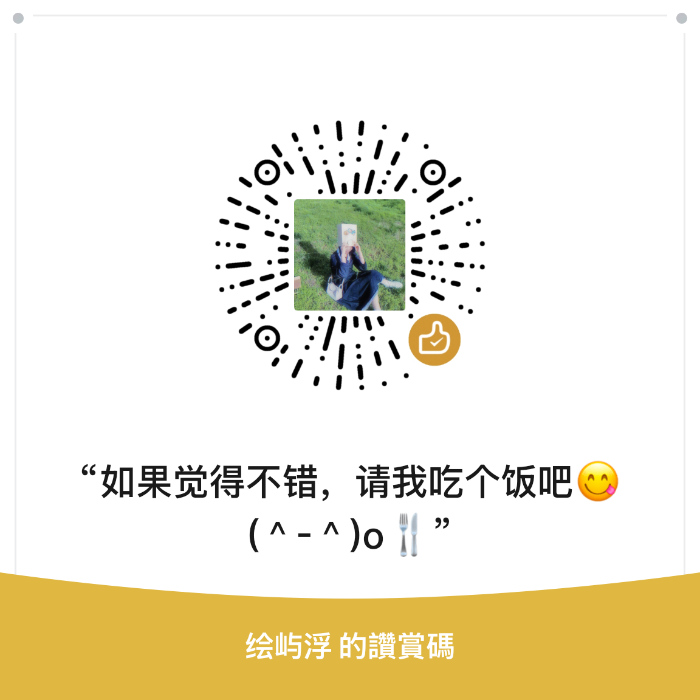

A note of thanks
让一盏小灯，
继续亮下去。
Lumi 由个人独立开发与维护。如果这款阅读器陪你读过一些好书，欢迎请开发者喝杯咖啡。
Thank you for keeping Lumi going
基础版会一直
免费、开源、无广告。
你的支持用于支付开发与维护成本，让问题修复和长期维护可以继续。官方版提供可选 Premium 功能；基础阅读始终开放。
每一份支持，无论多少，都被认真记得。
开发人员
huangder、Corundum-Ling
huangder、Corundum-Ling
WECHAT REWARD
微信扫一扫
打开微信 · 扫一扫 · 赞赏

感谢你愿意支持 Lumi 的开发与维护。With gratitude
谢谢你们，
让 Lumi 一路走到这里。
赞助开发
雋乂、匿名、匿名、匿名、Jun.、BennyBlack、百年老字号、匿名、匿名、白飘飘、唱罢阴山敕勒歌、七七七、Y3uoO、祈、宇宙无敌哥儿赞、马果、匿名、马果、知我、匿名、&_赵、匿名、匿名、蟑螂恶霸、路上行人、大灰狼、与瓦无瓜、Micah、小张、超级小步、选择春虫走向成功、盘旋在古城上的白色乌鸦、我滴龟龟哟、潔籁、清水肉肉、小耳朵左耳、匿名、littlebing、清水肉肉、Jiang、Towards the sun.